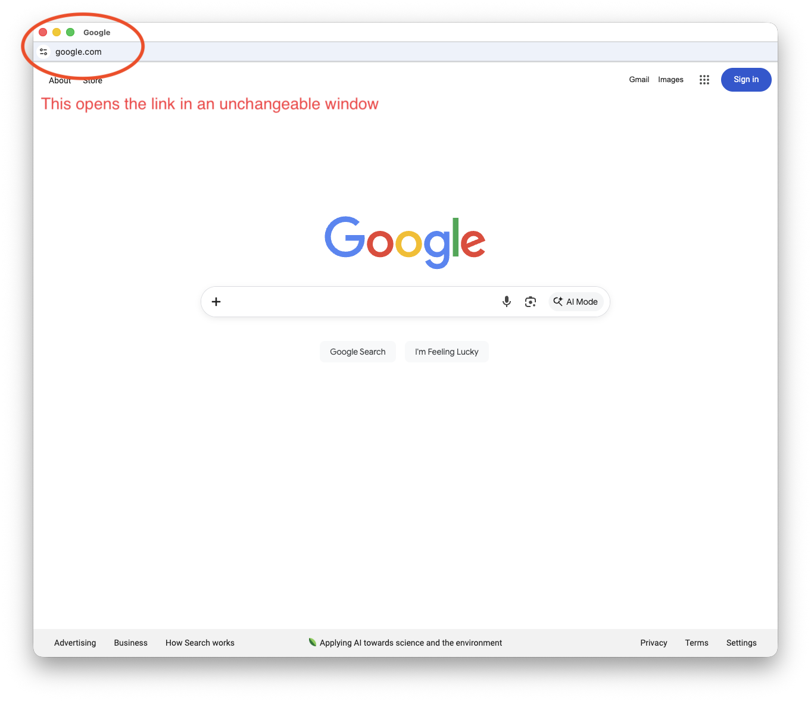

Hint: You can also use the Enter/Return Key! (If you're trying to make your own link, click here)
It makes a separate window of the website that can put on the box above!
Example for Google.com:

This can make you a formatted link for you
to save and use it later! (Enter/Return will not work here)!